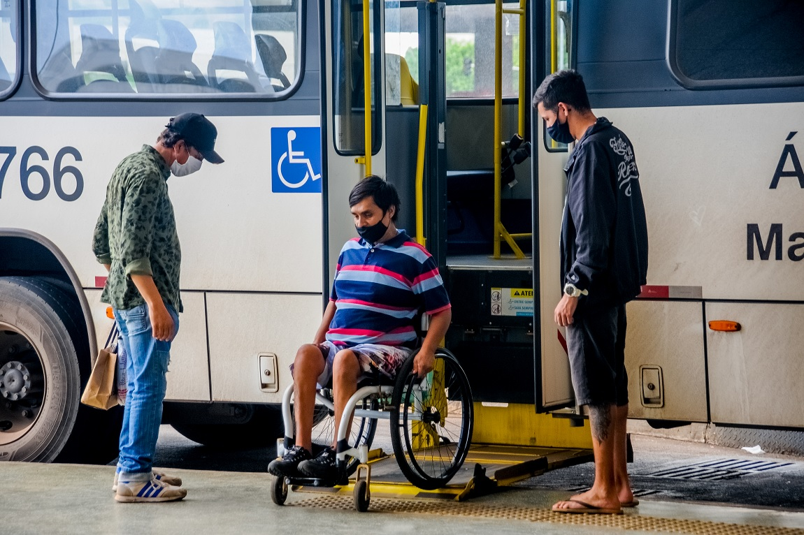
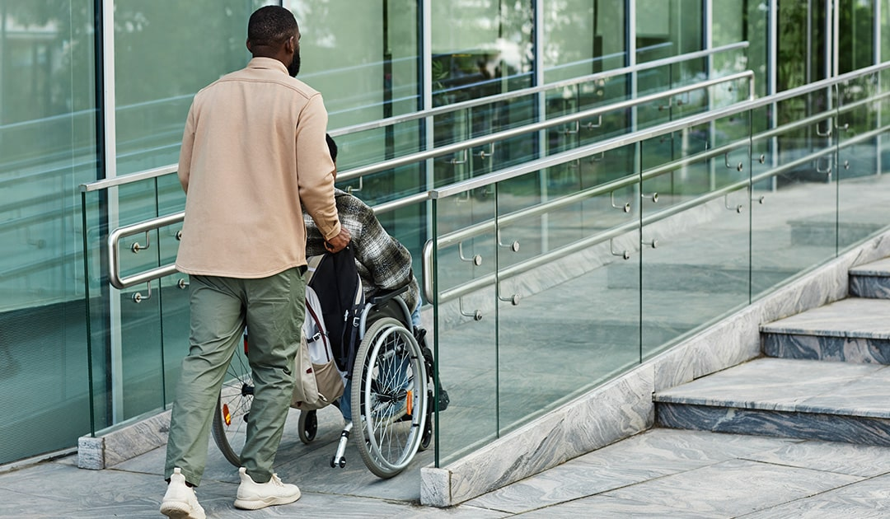
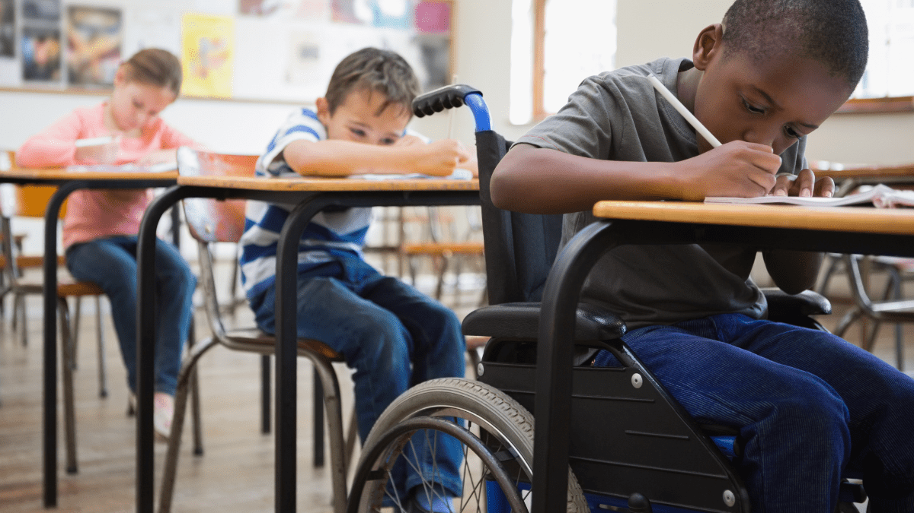

Acessibilidade no cotidiano:
A acessibilidade deve estar presente em todos os aspectos do nosso cotidiano.
Isso inclui desde a forma como projetamos as cidades até como acessamos informações na internet.
Aqui estão alguns exemplos práticos de como podemos promover a acessibilidade no dia a dia:
- Espaços Públicos: Rampas de acesso, semáforos sonoros, calçadas largas e adaptadas, banheiros acessíveis e transporte público adequado.
- Tecnologia: Aplicativos que permitem aumentar o tamanho da fonte ou alterar o contraste, sites com navegação por teclado, e textos alternativos para imagens.
- Comunicação: Utilizar linguagem clara e simples, oferecer legendas e tradução para a Língua Brasileira de Sinais (Libras), e promover a inclusão de pessoas surdas e com deficiências cognitivas nas interações sociais.



A acessibilidade no cotidiano não é apenas uma questão de obrigação legal,
mas de respeito e empatia para com todos, independentemente das suas limitações.